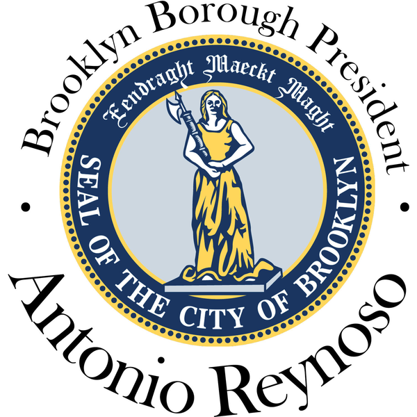
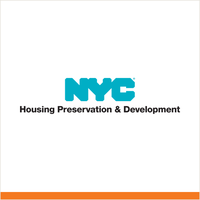
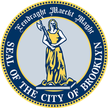

Tap a seal for the board's page. The whole app follows the community district you pick.
Brooklyn
 City Council
City Council State Assembly
State Assembly State Senate
State Senate Congress
Congress Subway
Subway Citi Bike
Citi Bike NYC Ferry
NYC FerryTurn layers on and off. Tap an official's logo or a board's seal for its page. Zoning and land use lot by lot are on the land use map.

Brooklyn

Fair Housing Growth Strategy City and state budgetsGovernment directory: agencies, officials, boardsThe NYC City CharterGovernment org charts: NYC and New York State
City and state budgetsGovernment directory: agencies, officials, boardsThe NYC City CharterGovernment org charts: NYC and New York State The BQEBrooklyn Marine TerminalGowanus rezoningEvery elected official in the city
The BQEBrooklyn Marine TerminalGowanus rezoningEvery elected official in the cityCommunity boards are the official, independent, and advisory bodies of New York City Government. There are 59 across NYC: 18 in Brooklyn, 14 in Queens, 12 in Manhattan, 12 in the Bronx, and 3 in Staten Island. They vote on issues across policy areas such as land use (first stop in ULURP), landmarks, liquor licenses, transportation, and budgets (past votes and minutes). Members are appointed by the borough president (half) and the city council members overlapping with the community district.
BKCB covers the 18 community districts of Brooklyn, from Greenpoint and Williamsburg (CB1) to Canarsie and Flatlands (CB18). Pick your board and the whole app follows it: its map, meetings, officials, blocks, parks, streets, land use and health. The Brooklyn tab holds what is borough wide.
Please note that the numbers start over in every borough, so there is a CB6 in Manhattan, Queens, and the Bronx.
Mike Racioppo
Calendar
Opens inside the app. Open the page on its own ↗
All 18 Brooklyn community boards


Brooklyn

 Weather, flood maps and alerts
Weather, flood maps and alerts